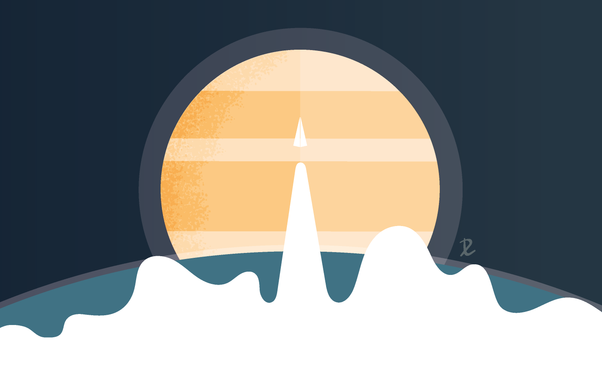

I am a postdoctoral researcher at the German Aerospace Center (DLR) and the Centre of Astronomy and Astrophysics at TU Berlin in Berlin, Germany. I am currently leading the international ISSI team on 'Seismicity on Venus: Prediction & Detection'.
I am an interdisciplinary geophysicist, focusing predominantly on the geodynamics and seismology of the Earth and terrestrial planets. I am particularly interested in subduction zone dynamics and the evolution and tectonics of Venus. My tools of trade are numerical models, particularly geodynamic and dynamic rupture models. Currently, I am also branching out to atmospheric studies by using radiative-transfer models of the early Earth steam atmosphere to further our understanding of the early evolution of the Earth and Earth-like exoplanets. By studying the planets holistically from multiple geophysical and geological angles, I believe we stand the best chance of unravelling their mysteries!
I am also an advocate for diversity and inclusion in the planetary and geosciences, and have written and spoken extensively on these topics. In 2021, I won the AGU Sharing Science Grant for my YouTube series 'Science Sisters', where I interview a set of diverse guests to explore different career paths and address current issues in academia, particularly concerning equality, diversity, and inclusion.
In addition to my research and advocacy work, I am an avid science communicator. I am the Editor-in-Chief of the EGU Geodynamics blog and I make YouTube videos on life as a researcher in the Earth and planetary sciences. Additionally, I won the 2021 EGU Public Engagement Grant to develop the educational card game QUARTETnary on the geological time scale of the Earth.
-

> ISSI Team
Seismicity on Venus: Prediction & Detection -

> Science Sisters
YouTube interview series on diversity and career paths -

> QUARTETnary
Card game on the geological time scale